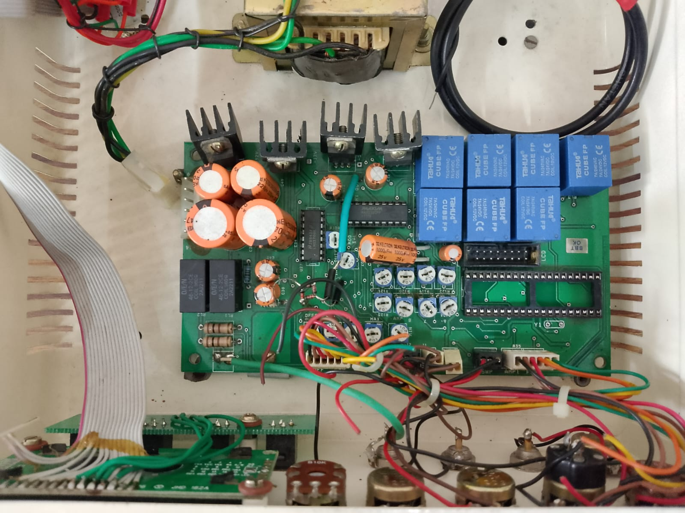
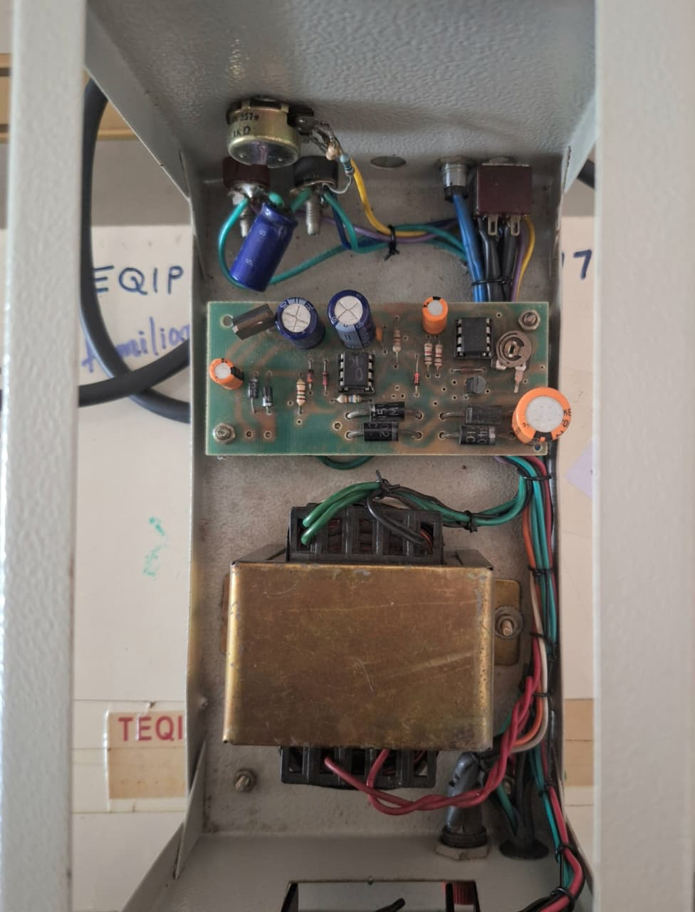
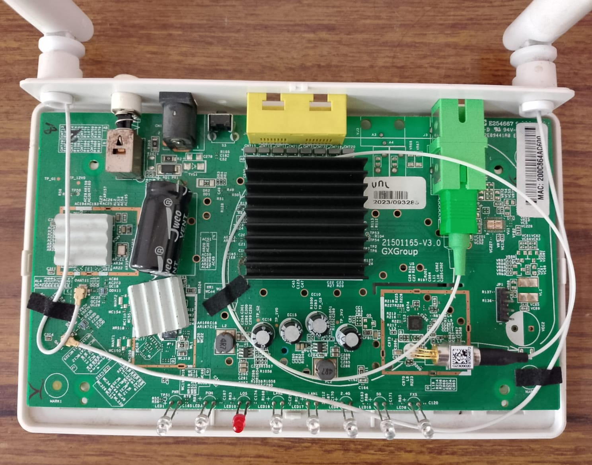

PCB Showcasing
Overview
This project deconstructs everyday electronics to reveal the internal Printed Circuit Boards (PCBs) that power them. By displaying the circuitry of a CRO, Function Generator, Power Supply Unit, and Wi-Fi Router, we facilitate a deeper understanding of hardware architecture.
Featured Components
1. Cathode Ray Oscilloscope (CRO)
An essential instrument for analyzing electrical signals. The PCB reveals the complex signal processing circuitry required to visualize voltage waveforms.
2. Function Generator
Creates various electrical waveforms (sine, square, triangle). The internal circuitry shows how precise signal generation is achieved.
3. Power Supply Unit
Converts AC to stable DC. The PCB layout demonstrates rectification, filtering, and regulation stages crucial for sensitive electronics.
4. Router Box
A central networking hub. Its PCB manages high-speed data traffic between LAN and WAN.
